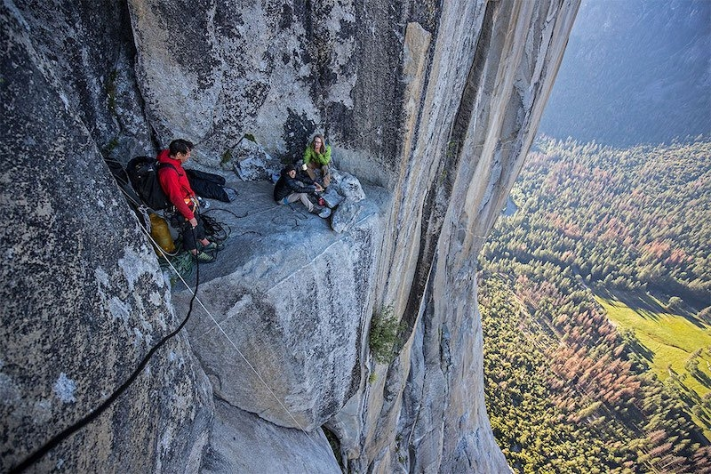

Who will win the streaming service race? Spoiler: cinematographers and viewers
Since its announcement in March this year, headlines have been heating up around Apple’s TV+ launch which is now just days away. We’ve seen the trailer for its first feature-length documentary The Elephant Queen and read news of a possible Apple TV+ and Music subscription bundling. There’s no doubt about it – the to-be newbie streaming service on the block is generating lots of hype and excitement.
Since the launch of YouTube in the mid-noughties and Netflix shortly after, the number of streaming services available to consumers across the globe has risen tenfold. The biggest players in the market, which sit separately from broadcasters, across Europe are undoubtedly Netflix and Amazon Prime but broadcasters like Sky and the BBC and more niche streaming services like reality TV content hub hayu are attracting viewers demanding whenever, wherever content.
The rise in the number of streaming services has naturally brought about increased market competition – with each of the players looking to secure the rights or self-create the next most talked about cult-followed series or documentary. What will be key for them to stay competitive amid the noise, will be offering viewers second-to-none, premium 4K content that puts them at the heart of an experience. Today content consumers not only want to watch shows with a great plot, they want to be moved by an immersive experience that tugs at their heart strings and has them on the edge of their seat but most importantly has them clicking “Continue Watching”.
"Content consumers not only want to watch shows with a great plot, they want to be moved by an immersive experience."
For cinematographers the ample number of streaming services opens huge doors of possibility and creativity – especially in the original content space. For example, this week Martin Scorsese defended his decision for his new film, The Irishman, to be backed by Netflix – because in comparison to more traditional studios Scorsese was promised more creative freedom under the streaming service. However, in order to govern the quality of its Originals content Netflix launched its Post Technology Alliance in September last year – a list of industry-leading kit that is required for cinematographers to use to meet industry standards and viewer expectations.
By using industry-leading kit cinematographers have unrestricted creativity to create immersive experiences across all genres – bringing viewers closer to the action.
Alex Honnold meets fellow climbers as he abseils El Capitan's Freerider route to practise before his free solo attempt. © Jimmy Chin Productions
Footage captured as the action is happening doesn’t need to be basic and functional. Take the Oscar winning Free Solo for example, Director Jimmy Chin and his team created the nail-biting documentary of professional rock climber Alex Honnold attempt to conquer the first free solo climb of famed El Capitan's 900-metre vertical rock face at Yosemite National Park. Despite cinematographers being hoisted up a rock face and dangling with kit, such as Canon’s EOS C300, they (by no mean feat) created content that put the viewer right on the rockface with Honnold with shots like close-up footage of the chalk on Honnold’s hands as he grips each rock and to overhead pans of him scaling at great heights.
The rise of streaming services has undoubtedly been a catalyst for increased quality of content as all players look to gain more subscribers and attract top cinematographers with the kit, capabilities and creativity to take the platform to the next level. It will be interesting to see, with more additions to the market, like Apple TV+, how the rest will respond.